v
5.3 Shortest Path Problems
- Consider a given weighted graph and associated with each edge (vi, vj), a cost ci,j to traverse the edge.
- The cost of a path v1, v2 ... vn is Σi-1n-1 ci,i+1 referred to as the weighted path length.
- In unweighted graph, the path length is merely the number of edges on the path, namely, n - 1.
- Given a weighted graph and two vertices u and v, finding a path of minimum total weight between u and v is called Shortest path problem.
- Applications
- Internet packet routing(phone bill, delay)
- Flight reservations
- Driving directions
- Google Maps
In following figure, find paths from v1 to v6.
- v1 -> v2->v4->v6 ; cost : 13
- v1->v2->v5->v7->v6 ; cost : 19
- v1->v2->v4->v7->v6; cost : 10
- v1->v4->v6 ; cost; cost :9
- v1->v4->v7->v6; cost : 6
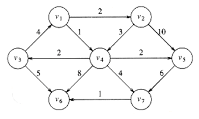
But, the shortest weighted path from v1 to v6 has a cost of 6 and goes from v1 to v4 to v7 to v6.
Two Types of problems
Single-Source Shortest path problem
- Given as input a weighted graph, G = (V, E), and a distinguished vertex, s , finding the shortest weighted path from s to every other vertex in G is known as single source shortest path problem
- Solution : Dijkstra Algorithm
All Pair shortest path problem
- Given as input a weighted graph, G = (V, E), finding the shortest path from every node in G to every other node in G is known as all pair shortest path problem
- Solution : Floyd - Warshall Algorithm
5.3.1 Dijkstra's Algorithm
- Provides a solution to the single-source shortest path problem
- Works on both directed and undirected graphs. However, all edges must have nonnegative weights.
- In unweighted graphs, edge cost can be considered as 1.
- Basic algorithm concept:
- create a table of information about the currently known best way to reach each vertex (distance, previous vertex) and improve it until it reaches the best solution.
Dijkstra's Algorithm - Detailed Steps
- Let s be the source vertex and initial current vertex
- Set ds = 0, ps = null , known = True
// d - shortest distance from source node s,
//p -previous node
//known indicates that shortest path to that node is found.
- For all other vertices v ϵ V, v ≠r, set dv = ∞ , pv = null, known = False
- For every vertex w adjacent to current vertex 'v' and also unknown, update the weight of the shortest path connecting source s to w through v as follows :
dw= min (dw, dv + Cv,w)
where Cv,w is the cost of the edge (v,w).
If minimum is dv + Cv,w update pw = v
- From the unknown vertices, pick the vertex with minimum distance and make it as the current vertex.
- Repeat steps 4 & 5 until shortest paths to all vertices are found.
Dijkstra's Algorithm - Pseudo code
The time complexity of this algorithm is O(|V|2) in dense graphs and runs faster in sparse graphs
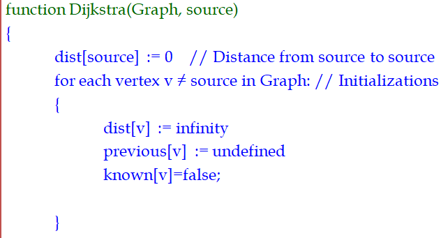
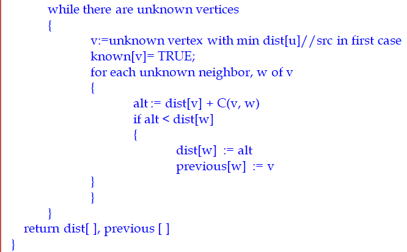
Dijkstra's Algorithm - Example
Find the shortest paths from the node v1 to all nodes in graph using Dijkstra's algorithm
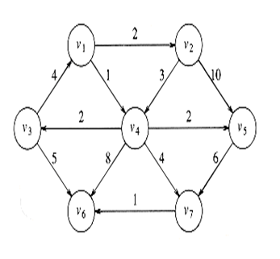
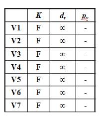
- Source node v1 is made known and distance is made 0
- Consider the nodes adjacent to v1.
- They are v2, v4
- dv2 = min (dv2, dv1 + Cv1,v2)
=min (∞ , 0 + 2)
= 2 => update in table
- Similarly do for v4 also.
- Now next unknown
Node with minimum
d is v4. So select
current vertex as v4.
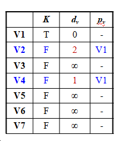
- Make v4 as known
- Consider the nodes adjacent to v4.
- They are v3, v5, v6, v7
- Update the distances
- Among the unknown vertices, v2 has
- Minimum d value. So select v2 as current node.
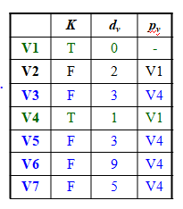
- Make v2 as known
- Consider the nodes adjacent to v2.
- They are v4 and v5
- V4 is already known.
- So check for v5 only
- dv5 = min (dv5, dv2 + Cv2,v5)
=min (3 , 2 + 10)
= 3 => no change
- Among the unknown vertices, v3 has
Minimum d value. So select v3 as
current node.
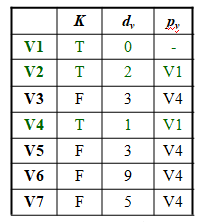
- Make v3 as known
- Consider the nodes adjacent to v3.
- They are v1 and v6
- V1 is already known.
- So check for v6 only
- dv6 = min (dv6, dv3 + Cv3,v6)
=min (9 , 3 + 5)
= 8 => change
- Among the unknown vertices, v5 has
Minimum d value. So select v5 as
current node.
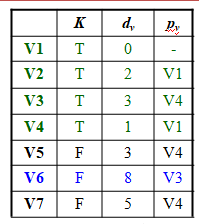
- Make v5 as known
- Consider the nodes adjacent to v5.
- It is v7 only
- check for v7
- dv7 = min (dv7, dv5 + Cv5,v7)
=min (5 , 3 + 6)
= 9 => No change
- Among the unknown vertices, v7 has
Minimum d value. So select v7 as
current node.
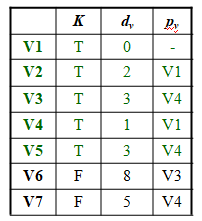
- Make v7 as known
- Consider the nodes adjacent to v7.
- It is v6 only
- check for v6
- dv6 = min (dv6, dv7 + Cv7,v6)
=min (8 , 5 + 1)
= 6 => change
- Remaining is only v6. So make it known.
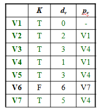
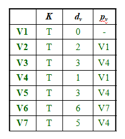
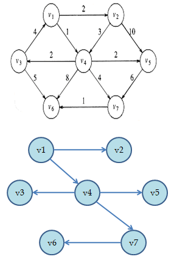
Path with cost
- v1->v2 : 2
- v1->v4 : 1
- v1->v4->v3 : 3
- v1->v4->v5 : 3
- v1->v4->v7 : 5
- v1->v3->v7->v6 : 6
All source shortest path Problem
- We could just run the appropriate single-source algorithm |V| times with every node in V one by one as the source node.
- The time complexity of such algorithm will be O(|V|3)
- But Dijkstra algorithm can not work on graphs with negative cost edges
- Floyd-Warshall algorithm is a dynamic programming solution that solves all source shortest path problem in O(n3) time for a graph with n vertices.
5.3.2 Floyd-Warshall Algorithm
- Input : The given graph G=(V,E) is represented by the weight matrix representing the weight of edges as follows.
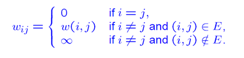
- Intermediate Vertices : The vertices v2, v3, ...vl-1 are called the intermediate vertices of the path, p = 1,v2,....vl>
- Let dij(k) be the length of the shortest path from i to j such that all intermediate vertices on the path (If any) are in the set {1,2,...,k}
- Initially dij(0) is set to wij. This means there is no intermediate vertex on the path i to j.
- Let D(k) be the n X n matrix [dij(k)]
- Our aim is to find D(n) where n is the number of vertices in the graph. For this we need to compute D(k) where k=1,2,3...n sequentially.
- Initially, D(0) = [wij], the weight matrix of given graph.
- Compute D(k) , from D(k-1) as follows for k = 1,2,...n.

Floyd-Warshall Algorithm - Pseudo Code
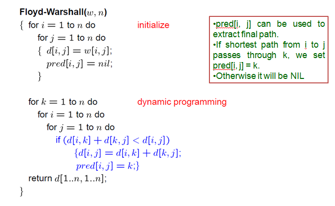
Floyd-Warshall Algorithm - Example
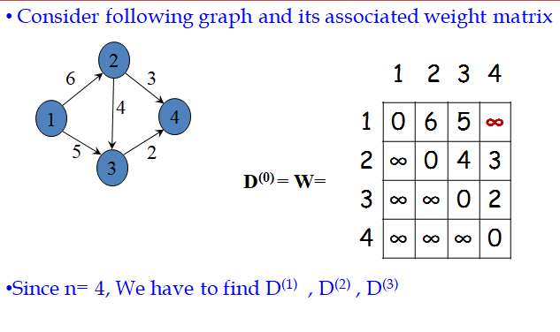
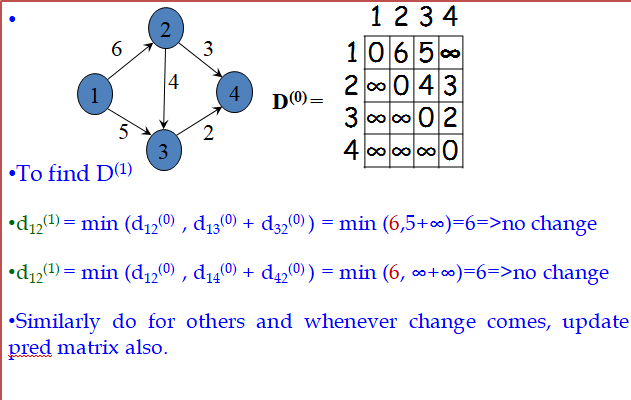